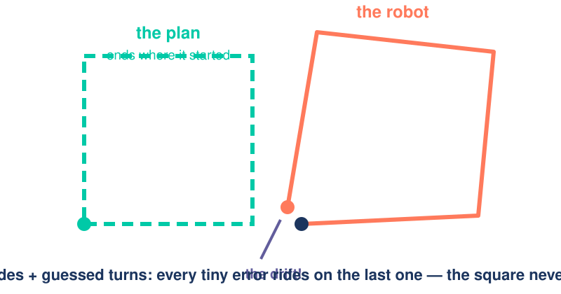
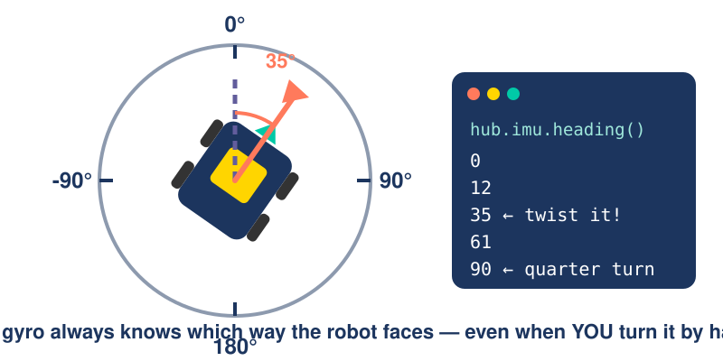

Drive a Square
Day 3 · Robot Rockstars · SPIKE Prime + Pybricks
2026-07-15
A. Warm-Up
Yesterday you taught it distance. Today it learns direction — and you build the steering yourself.
Where we left off
| Yesterday | The trick |
|---|---|
| 📏 Distance | count degrees — 1 turn = 27.6 cm |
| 🧭 Blindfolded | no checking → it drifts |
🤔 It knows how far its wheels spun. But which way is it pointing?
⏱️ Time: 10 minutes
Setup — same as yesterday
B. Break It
Distance is solved. So ask for the one shape that needs four good turns: a square.
One corner = how many degrees? 🤔
A side is easy: 30 cm → 391°. But when the robot spins in place, how far does each wheel roll?
Watch the wheels from above — what shape do they draw?
Sketch it. Write down a wheel-degrees guess. 👀
The wheels answer: the turn-circle 🛞
tire rolled: 0.0 cm → 0°
That gap has a name: the axle track — the wheel-to-wheel distance, ≈ 14.5 cm on our base. Wider robot → longer rope → bigger corner. Measure your own — nobody copies 148.
Unroll the formula 🧵
Your 148 is right. But every number is one of yesterday’s ropes — unroll them, and watch π vanish:
TURN_ANGLE = turn × gap ÷ wheel. The two 3.14s cancel. Keep gap and wheel in your pocket… 😏
Prove you own it: the about-face 🔄
Judge wants a full 180° about-face. In turn × gap ÷ wheel — which number changes?
Say it first, then calculate.
Only the turn changed — half the rope, so ≈ double. Gap and wheel = your robot’s fingerprint. The turn = your order.
The square — by hand
SIDE_ANGLE = 391 # 30 cm × 13.04 — yesterday's translator
TURN_ANGLE = 148 # YOUR number — ¼ turn-circle, translated. Honest math!
SPEED = 400 # deg/s
left.run_angle(SPEED, SIDE_ANGLE, wait=False) # side 1
right.run_angle(SPEED, SIDE_ANGLE)
left.run_angle(SPEED, TURN_ANGLE, wait=False) # corner 1 — wheels roll opposite ways…
right.run_angle(SPEED, -TURN_ANGLE) # …so the robot spins in place
# your turn: copy-paste until you have 4 sides + 4 cornersRun it. A square! …ish. Hold your corner questions — first, a code smell. 👃
Quick quiz 🚨
Your square = ~16 copy-pasted lines. Now the judge wants an octagon. Then a triangle. How many lines each time?
Would you bet a competition run on 32 pasted lines?
32 pasted lines — one flipped minus sign from a broken corner. Repeating yourself breeds bugs. Repeats are the computer’s job.
The rescue: repeat with for
- Run it: prints 0, 1, 2, 3 — computers start counting at 0.
- Everything indented under the
foris inside the loop.
range(4) = “4 times.” Write it once, repeat it. A square = one corner, four times.
🐛 Bug hunt: the missing colon
This for loop won’t even start — Pybricks flags the first line in red. What’s missing?
SyntaxError — no colon. Every repeat header ends in : — it says “block starts here.” Fix: for side in range(4):
🐛 Bug hunt: the runaway line
The colon’s there now… and it still won’t run. Read the error — it points at line 2.
IndentationError — lines inside a loop must be pushed in (one Tab). No indent, no “inside.” The spaces tell Python what repeats.
The square — one corner, four times
SIDE_ANGLE = 391 # same constants as before…
TURN_ANGLE = 148
SPEED = 400
for side in range(4):
left.run_angle(SPEED, SIDE_ANGLE, wait=False) # counted → sides are solid
right.run_angle(SPEED, SIDE_ANGLE)
left.run_angle(SPEED, TURN_ANGLE, wait=False) # wheels roll opposite ways…
right.run_angle(SPEED, -TURN_ANGLE) # …so the robot spins in place~16 lines → 8. Octagon? range(8) + one new corner number — two edits.
Now mark your start with tape. Run it three times. Where does it finish?
The square that never closes

The wheels really did roll 148° — your math was right.
But a spinning tire slips → a different angle every run. Counting fixes distance, never heading.
Your robot needs a sense of direction.
⏱️ Time: 25 minutes
C. Feel It
Before we fix anything — find this sense in your own body.
You already own this sensor 🧍
The game
Stand up, arms out, eyes closed. Your partner slowly turns you a random amount — maybe a quarter turn, maybe more. Eyes still closed: point at the door.
- Most of you will point close. How?! You saw nothing. No wheels counted anything.
Your inner ear feels turning — pure rotation. Robots have it too: the gyro, awake inside the hub this whole time.
⏱️ Time: 5 minutes
One number for “which way”: heading
→ 0°
heading = degrees turned from where you started. Right = up, left = down. Keep spinning → 360, 450, 720…
What the robot sees

Lab: feel the gyro 🖐️
- Pick the robot up. Twist it left, right, all the way around — the numbers follow your hands. No motor moved.
- Spin one slow full circle → 360. Keep going → 720!
⏱️ Time: 10 minutes
Quick quiz 🚨
Twist the robot right 90°… then left 90°. What does heading() read now?
90? 180? 0? Something else? Vote first, then try it.
0 — heading is net turning: +90 − 90 = 0. A compass needle, not a step counter.
D. Steer With It
The gyro knows the truth. Now hand it the steering wheel — one line at a time.
Plan it in words first
You can left.run(200), left.stop(), and read hub.imu.heading() live. In plain words — how do you turn exactly 90°?
No code. Say the plan out loud.
“Spin. Keep watching the heading. The instant it says 90 — stop.” A turn that watches itself. New trick: repeating while something is true.
New trick: while
forrepeats a known count.whilerepeats while a check is true.- This loop does nothing but watch — hundreds of gyro checks per second.
The program parks on the while until the check turns false. “Stare until it’s time” is every robot’s heartbeat.
The watched turn — your first gyro move
hub.imu.reset_heading(0)
left.run(200) # left wheel forward…
right.run(-200) # …right wheel backward = spin in place
while hub.imu.heading() < 90: # watch the gyro…
wait(5)
left.stop() # …and stop AT 90. Not "about" 90.
right.stop()
wait(1000) # let the coast settle — read too soon and you'll catch it mid-motion
print(hub.imu.heading()) # moment of truth 👀Run it. What did it print?
Quiz: it printed 94. Who’s guilty? 🚨
The gyro lying? Python too slow? The robot broken?
Hint: try to freeze yourself mid-spin.
Momentum. stop() is instant — a spinning robot isn’t. It coasts past the line, like a car braking. The gyro told the truth: you did end at 94.
⏱️ Time: 20 minutes
E. Loops × Turns
A corner costs one while now. Put it inside the for — and let the judge call any shape.
The watched square — a loop in a loop
SIDE_ANGLE = 391 # 30 cm — yesterday's translator
SPEED = 400
for side in range(4):
left.run_angle(SPEED, SIDE_ANGLE, wait=False) # side: counted degrees
right.run_angle(SPEED, SIDE_ANGLE)
hub.imu.reset_heading(0) # corner: watched, not guessed
left.run(200); right.run(-200)
while hub.imu.heading() < 90:
wait(5)
left.stop(); right.stop()- A
whileinside afor— count loop draws, watch loop lands each corner. - What’s gone: no 148. The gyro speaks robot-degrees — ask 90, it watches 90.
Tape your start. Run 3× beside the blind square: closer — and off by the same few degrees each time. A bug you can predict is a bug you can fix. 😏
Watch the motion, though: yesterday’s counted square glided — this one lurches to each stop. That’s not the gyro — it’s us flooring it, then cutting power. Smooth ≠ right: the smooth one drifted. Tomorrow — smooth and right. 😏
Pro move: targets that climb 🧗
Each corner resets heading to 0. But heading keeps counting: 360, 450, 720… What if you never reset — aim corner 1 at 90, corner 2 at 180, corner 3 at 270?
Where would the coast go?
The target is built from the loop variable — so the coast stops piling up: overshoot to 94, and corner 2 has 4° less to turn. Each mistake pays for the next. Fast squads: race both squares — which closes tighter?
Any shape, two numbers 🔺⬣
Every corner adds up to one full lap is 360°, so corner = 360 ÷ sides.
A new shape in the code is just two edits: the range(...) count and that corner angle.
⏱️ Time: 20 minutes
F. Competition & Gate
Today’s showdown: Shape Shifter 🔺⬛⬣
Shape Shifter 🔺⬛⬣
The challenge
Judge calls a shape — triangle up to octagon. 60 seconds to edit and run: range(?) + corner = 360 ÷ sides. Score = gap from tape to finish; tiebreak = fewest lines touched. 3 calls, best two count.
- Two edits per shape — that’s the whole race. Copy-pasters meet their doom at the octagon. 😈
- Pro question: which drifts more — 3 fat corners or 8 skinny ones? Watch your traces; keep the answer for tomorrow.
Today’s gate
You’re done today when…
The judge calls any shape → your loop draws it with watched corners (two edits, no copy-paste). You can explain heading, walk your watched turn line by line, and name who’s guilty for the 94.
Tomorrow: the coast meets its cure — arrive slowly. Then the cure gets a brain: speed that shrinks with the error. One formula… and it has a name every roboticist on Earth knows.